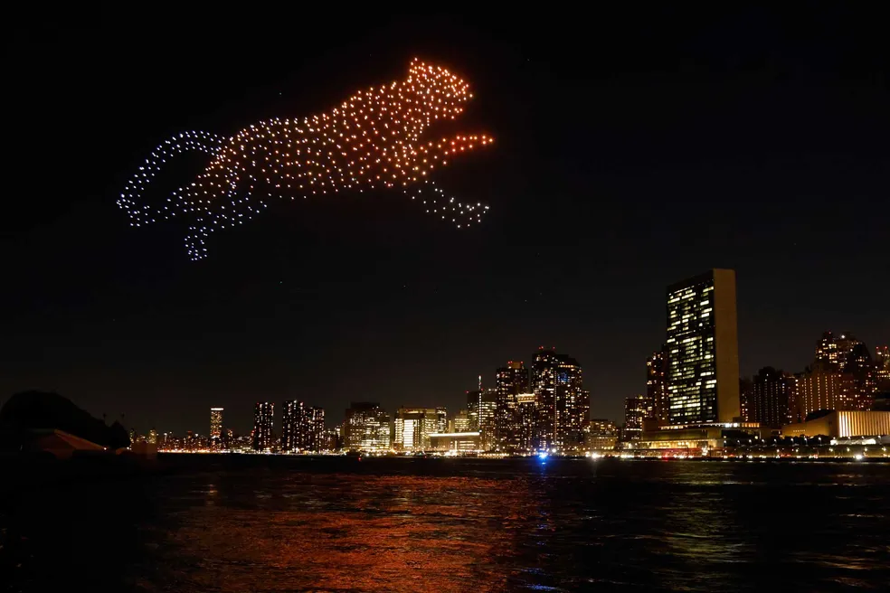
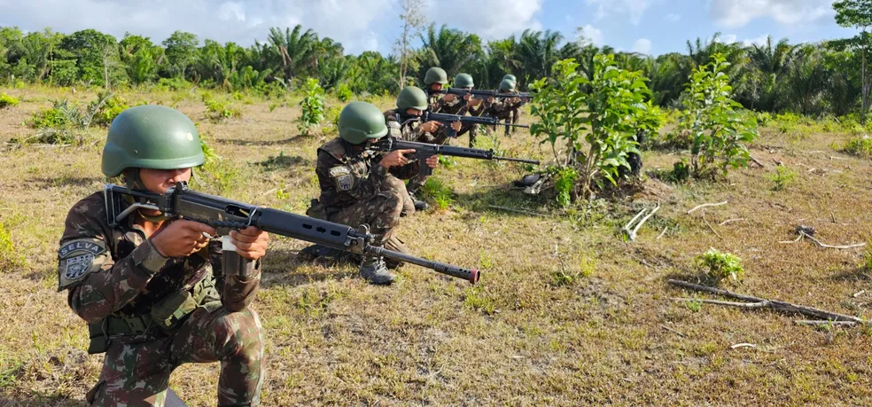
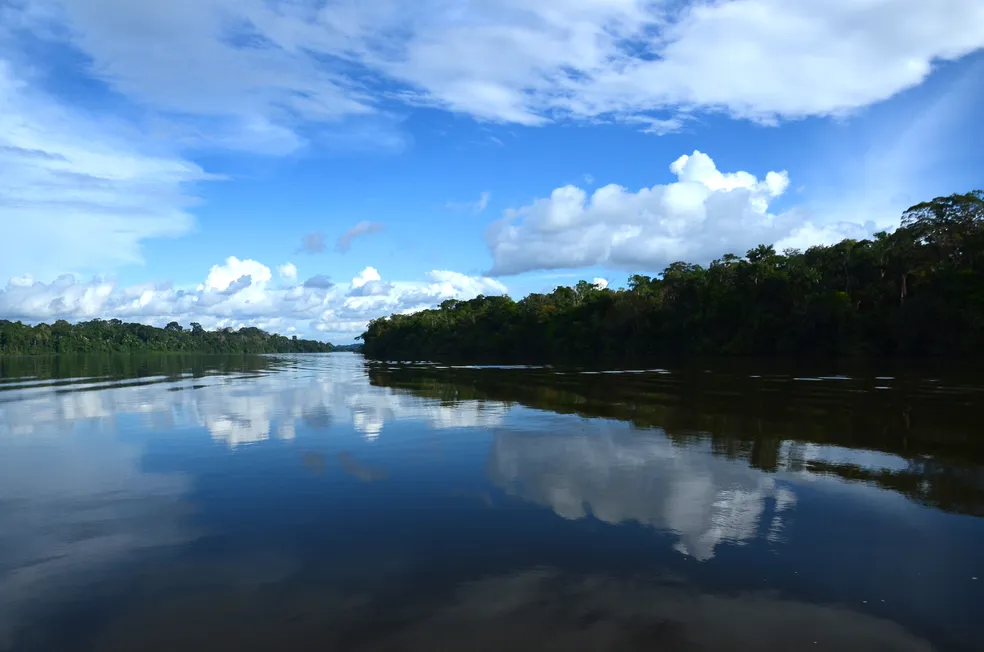

Drones iluminam NY em campanha pela floresta amazônica.

Mil drones iluminaram a noite desta sexta-feira (15) em Nova York, evento que integra uma campanha internacional pela Amazônia.
A cidade, que receberá a 78ª Assembleia-geral da ONU na próxima terá (19), foi escolhida para o show que pede a proteção da floresta.
O objetivo da campanha é chamar a atenção para a floresta dias antes do discurso de Lula na ONU – por tradição, o presidente brasileiro faz o pronunciamento de abertura.
Uma das mensagens em inglês mostra o planeta em chamas e a frase "a Amazônia queima, o mundo queima".Representantes indígenas integraram o evento.
Comando Militar do Norte realiza treinamento de defesa territorial na foz do Amazonas, no AP

Uma operação de treinamento foi montada pelo Comando Militar do Norte para simular um assalto anfíbio, ou seja, um ataque pela praia, na foz do Amazonas. O local escolhido foi a praia do Goiabal, no município de Calçoene, litoral do Amapá. Os treinamentos contam com cerca de 1000 militares de 56 organizações, e começaram na segunda-feira (11) seguindo até esta sexta-feira (15).
O foco da operação Calçoene é a defesa do território nacional, em um cenário logístico, neste caso, a foz do Amazonas. Participam militares do Ministério da Defesa, Marinha do Brasil e do Exército Brasileiro.
MPF pede intervenção do Ibama no processo de licenciamento da construção de usina hidrelétrica em MT

O Ministério Público Federal (MPF) pediu a intervenção do Instituto Brasileiro do Meio Ambiente e dos Recursos Naturais Renováveis (Ibama) no processo de licenciamento da construção da Usina Hidrelétrica (UHE) de Castanheira. O empreendimento está previsto para ser instalado próximo ao Rio Arinos, na bacia hidrográfica do Rio Juruena, na região de Juara, a 690 km de Cuiabá. O Ibama tem um prazo de 30 dias para responder a recomendação.
A usina tem previsão para ocupar área de 94,7 km², equivalente a quase 9,5 mil campos de futebol, estendendo-se por mais 67 km. No entanto, um levantamento feito pela Empresa de Pesquisa Energética (EPE) mostrou que existem terras indígenas ocupando parte do território da bacia e que poderiam ser fortemente impactadas pela construção da usina hidrelétrica.
Em nota, o Instituto informou que recebeu a recomendação e que irá se manifestar dentro do prazo estabelecido.